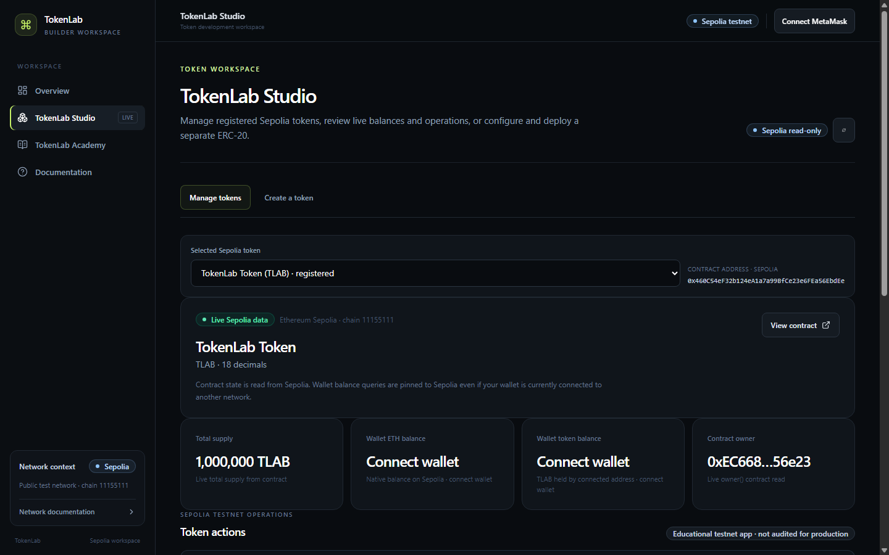
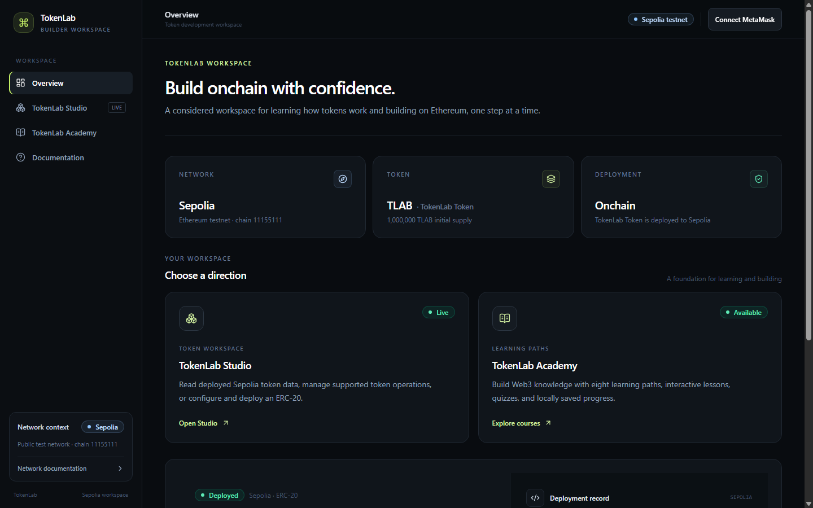
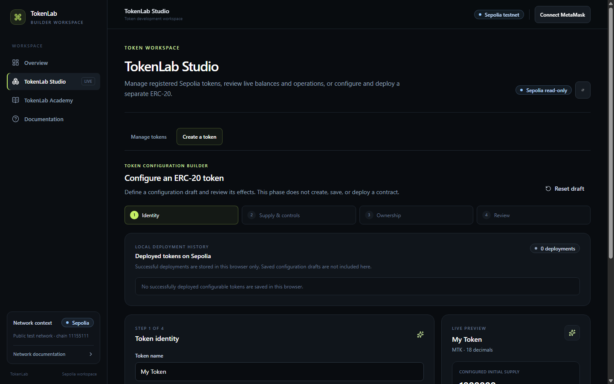
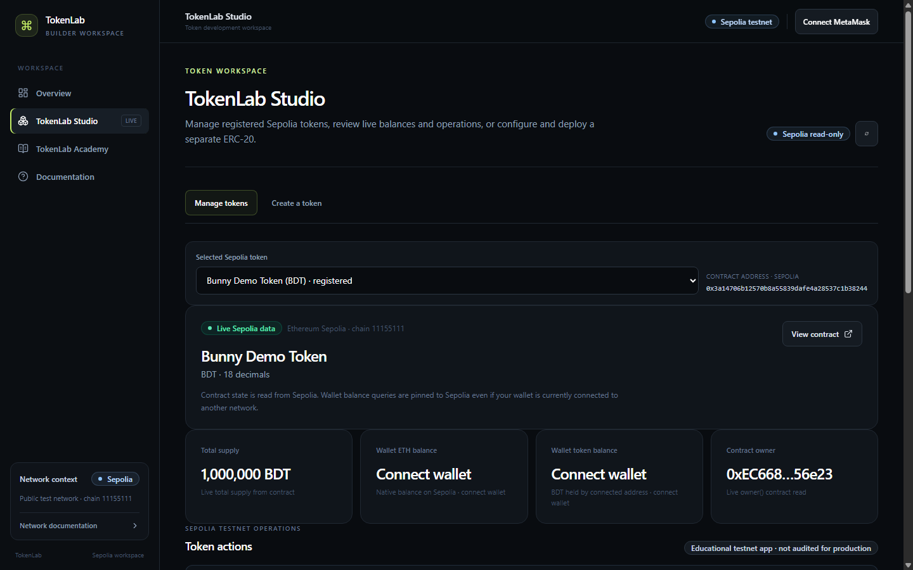
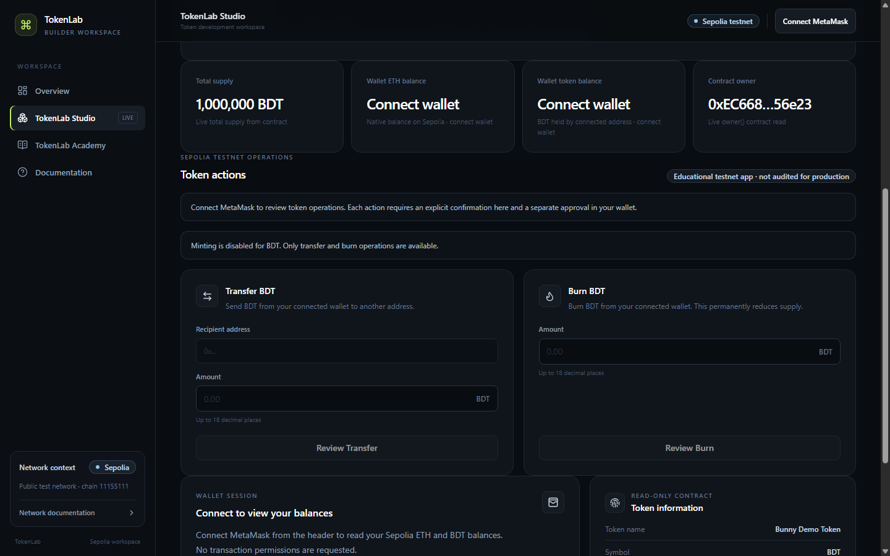
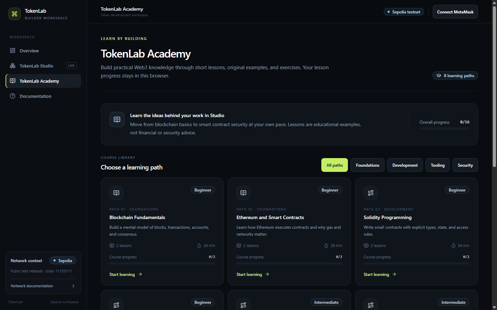
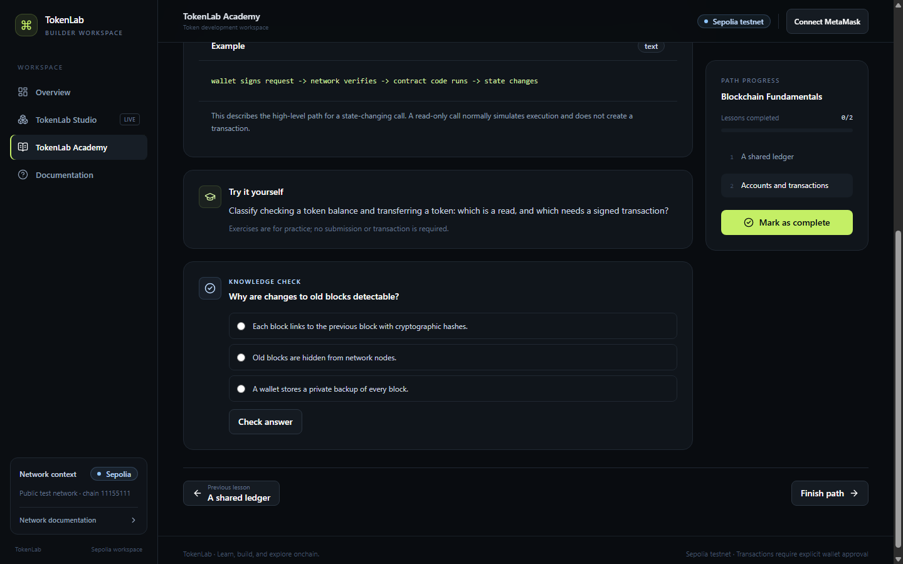
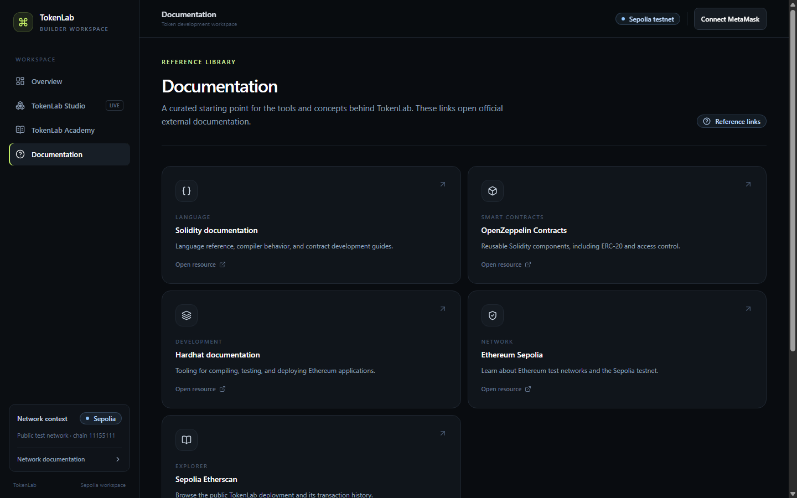

Objective
Make ERC-20 concepts approachable through lessons and a hands-on development interface.
A Web3 token creation and learning platform built with Solidity, OpenZeppelin, Hardhat, React, and TypeScript. It brings configurable ERC-20 workflows, Sepolia token management, and interactive blockchain lessons into one educational project.

Actual local application capture · read-only Sepolia contract data · wallet disconnected
TokenLab was built to connect foundational blockchain learning with practical token-development concepts. The interface lets learners inspect real Sepolia contract state and explore a configurable token workflow without presenting testnet activity as a production service.
Make ERC-20 concepts approachable through lessons and a hands-on development interface.
Ethereum Sepolia, chain ID 11155111, for demonstration and learning only.
Runs locally from source. There is no hosted live demo.
The browser presents the Studio, Academy, and documentation as separate routes. Wallet-facing reads and writes are configured for Sepolia; local deployment records are treated as browser records rather than authoritative chain state.
React, TypeScript, Vite, Tailwind CSS, and React Router provide the responsive interface and route-level code splitting.
wagmi and viem connect MetaMask and perform Sepolia-scoped reads and explicitly approved writes.
Solidity contracts use OpenZeppelin ERC-20 and ownership components. A separate configurable ERC-20 template supports educational configuration choices.
Hardhat and TypeScript support compilation, contract tests, deployment preflight checks, and frontend ABI generation. Vitest and Testing Library cover UI behavior.
TokenLab includes a fixed TLAB ERC-20 and a separate configurable ERC-20 template. Deployment safeguards validate HTTPS RPC configuration, signer and network identity, gas estimates, and funding before the CLI deployment call. The browser flow presents a review and relies on separate wallet approval. No deployment was performed for this case study.
The multi-token dashboard selects registered Sepolia contracts, reads their name, symbol, decimals, supply, and owner, and shows connected-wallet balances when a wallet is connected. Supported actions include transfer, burn, and owner-authorized minting where enabled.
The wizard validates token identity, supply and controls, recipient, and owner before presenting a review. Configuration fields remain a draft until a user deliberately continues through a wallet-approved deployment.
Eight original learning paths include structured lessons, Solidity examples, practice prompts, interactive quizzes with feedback, previous/next navigation, and browser-local completion progress.
These are the recorded results from the release-preparation validation run. Browser smoke checks covered desktop, tablet, and 390px mobile layouts; the wallet remained disconnected during screenshot capture.
These unaltered screenshots were captured from TokenLab running locally in a desktop browser. The wallet was disconnected; no private data, transaction confirmations, or hosted application are shown.







The contracts and the application have not undergone an independent security audit. TokenLab is not represented as production-ready and should not be used as a mainnet token platform.